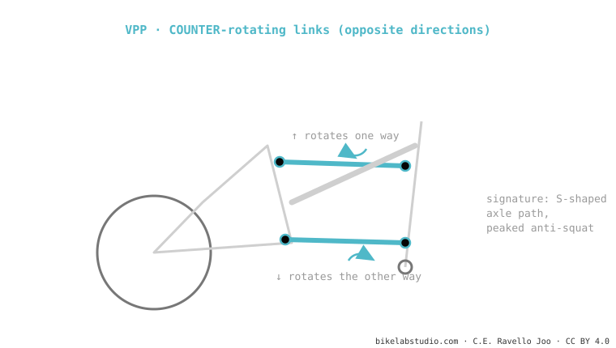

The VPP (Santa Cruz, Intense) also uses two short links, but they rotate in opposite directions (counter-rotating) — and that's the whole difference from the DW-link. That moves the "virtual pivot" differently and gives an S-shaped axle path and a peaked anti-squat. Originally from Outland, today owned by Santa Cruz. It is one of the dual-link systems.
People lump it in with the DW-link "because both have two links". But they rotate the other way — and that changes how the bike behaves.

By rotating in opposite directions, the links make the instant centre of rotation migrate in a particular way: the wheel traces an S-shaped path (it backs up a little at first, then moves forward) and the anti-squat tends to have a peak rather than a plateau. That gives that "instant acceleration" feel under hard pedalling that Santa Cruz riders recognise.
No: VPP rotates the links in opposite directions; DW-link in the same. It changes the instant centre, anti-squat and axle path.
Santa Cruz and Intense. The modern (lower-link) models are more progressive than the old VPPs.
Tell us the model and we'll tell you its curve (and whether it takes a coil) and the ideal setup. Message us on WhatsApp
© 2026 BikeLab Studio. Content under CC BY 4.0: you may copy, translate and publish it, even for commercial purposes. Citation is mandatory. Without attribution, the license terminates automatically (CC BY 4.0, §6.a) and the use becomes copyright infringement: we request the removal of the content and its deindexing. · Design and ownership: Carlos Ravello Joo